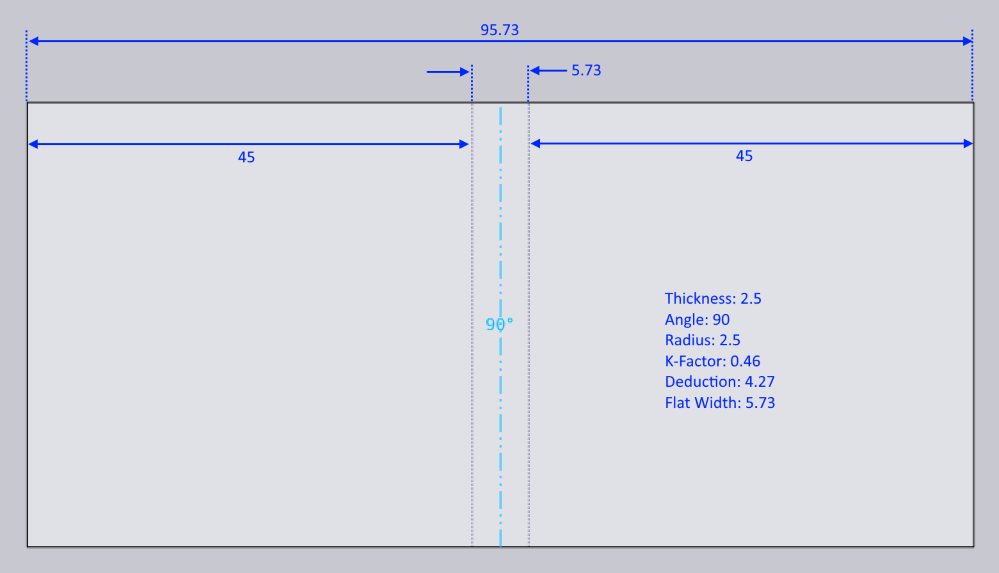

Adapt Geometry -ominaisuus
Tässä asiakirjassa selitetään kolme eri prosessivaihtoehtoa, jotka ovat käytettävissä Adapt Geometry -ominaisuuden kanssa:

Adapt Geometry -toimintoa käytetään, kun tuotava osa ei vastaa todellisia prosessiolosuhteita. Osassa voi esiintyä yksi tai molemmat seuraavista ongelmista:
-
Taivutusten sisäsäde voi olla liian pieni. Jokaisella prosessilla (kuten paneelitaivutus tai särmäyspuristimen ilmataivutus) on vähimmäissisäsäde, joka on mahdollinen kyseisessä prosessissa. Jos osan suunnittelusäde on tätä pienempi, osaa ei voida valmistaa suunnitellun mukaisesti; sädettä on muutettava.
-
Taivutusviivan K-kerroin voi olla virheellinen. Prosessikone (paneelitaippo vs särmäyspuristin) ja prosessityökalut tai -olosuhteet (lävistäjä/muotti/taittoteriä/ilmarako) yhdessä määrittävät taivutuksen todellisen K-kertoimen. Taivutus voi olla suunniteltu eri K-kertoimella.[1]
Otetaan yksinkertainen 2D-osa, jossa on sekä virheellinen säde että virheellinen K-kerroin, ja katsotaan kuinka Adapt Geometry -toiminto muokkaa tätä osaa.

Tuotava 2D-osa on esitetty yllä – se on yksinkertainen suorakulmio, jossa on yksi taivutusviiva täsmälleen keskellä. Osan leveys on 96,75 mm. Materiaalin paksuus on 2,5 mm.
Taivutusviiva on suunniteltu sisäsäteellä 0,5 ja K-kertoimella 0,5. Tasoleveysaste (neutraalin viivan pituus) on siksi:
kulma * (sisäsäde + K-kerroin * paksuus) = PI/2 * (0,5 + 0,5 * 2,5) = 2,75 mm
Koska tämä on 90 asteen taivutus, taivutusvähennys on yksinkertaisesti:
2 * paksuus - tasoLeveys = 2 * 3 - 2,75 = 3,25 mm
Älä muuta mitään
Kun taitetan ilman Adapt Geometry -käsittelyä, tämä luo siis osan, jonka mitat ovat:

Tämä on myös täsmälleen tulos, jonka saamme vaihtoehdolla Älä muuta mitään. K-kerrointa tai sädettä ei muutettu, mikä johtaa 3D-osaan, joka vastaa täsmälleen 2D-piirustuksen suunnittelutarkoitusta. Jos tämä asetetaan valmistukseen, valmistettu osa ei itse asiassa vastaa näitä mittoja, pääasiassa siksi, että koneella tuotettu taivutus vaihtelee sekä säteeltään että todelliselta K-kertoimeltaan suunnitellusta taivutuksesta. Tässä tapauksessa päädyt osaan, joka on vähän pienempi kuin 50x50 valmistuksen jälkeen.
Säilytä tason koko
Jos tämä vaihtoehto valitaan, TecZone Bend pitää tason koon muuttumattomana, mutta merkitsee taivutusviivat oikealla taivutussäteellä ja K-kertoimella. Oletetaan, että oikea taivutussäde on 2,5 mm ja K-kerroin on 0,46 mm. Osa muutetaan nyt ensin sisäisesti tähän:

Huomaa, kuinka osan kokonaiskoko on muuttumaton (edelleen 96,75 mm) ja taivutusviivan sijainti on muuttumaton. Kuitenkin taivutus on nyt säteeltään 2,5 ja K-kertoimeltaan 0,46, mikä tarkoittaa, että taivutuksen tasoleveys on kasvanut arvoon 5,73. Tämä taitetan nyt seuraavaksi:

Kuten näet, osan 2D-mitta on muuttumaton, mutta 3D-mitta on muuttunut arvoon 50,51 x 50,51 (alkuperäisestä suunnittelumitasta 50 x 50).
Säilytä 3D-mitta
Jos tämä vaihtoehto valitaan, osan 3D-mitta on muuttumaton, mutta koska taivutussäteet ja K-kertoimet muuttuvat, avattu osa muuttuu. Kun aloitetaan 2D-tasosta (kuten tässä esimerkissä), TecZone Bend noudattaa seuraavia vaiheita.
-
Taita malli 3D:ksi käyttäen alkuperäistä suunnittelutarkoitusta säteen ja K-kertoimen osalta. Tämä johtaa 3D-malliin, joka näyttää identtiseltä kuvassa 2 olevan kanssa.
-
Muuta nyt säde tavoitesäteeksi 2,5 mm ja K-kerroin tavoitteeksi 0,46. Tämä johtaa 3D-malliin, kuten alla olevaan:

-
Tämä malli avataan sitten (käyttäen K-kerrointa 0,46 taivutukselle) seuraavaksi tasoksi:

Tällä vaihtoehdolla 3D-mitta säilyy suunnittelumitassa 50x50. Avatun osan leveys on muuttunut arvosta 96,75 arvoon 95,73 mm.
Yhteenveto
-
Jos tasoa ei ole vielä tuotettu, paras vaihtoehto on tyypillisesti Säilytä 3D-mitta
-
Jos taso on tuotettu eikä sitä voida muokata, paras vaihtoehto on Säilytä tason koko
Molemmat näistä vaihtoehdoista johtavat osiin, joissa lopullisen valmistetun tuloksen tulisi vastata 3D-dataa, joka näkyy TecZone Bend-ikkunassa. Sitä vastoin Älä muuta mitään -vaihtoehto johtaa lopulliseen valmistettuun osaan, joka ei vastaa Fluxissa näkyvää 3D-dataa, koska todelliset taivutussäteet ja K-kertoimet eivät ole mallinnettu oikein suunnittelussa.